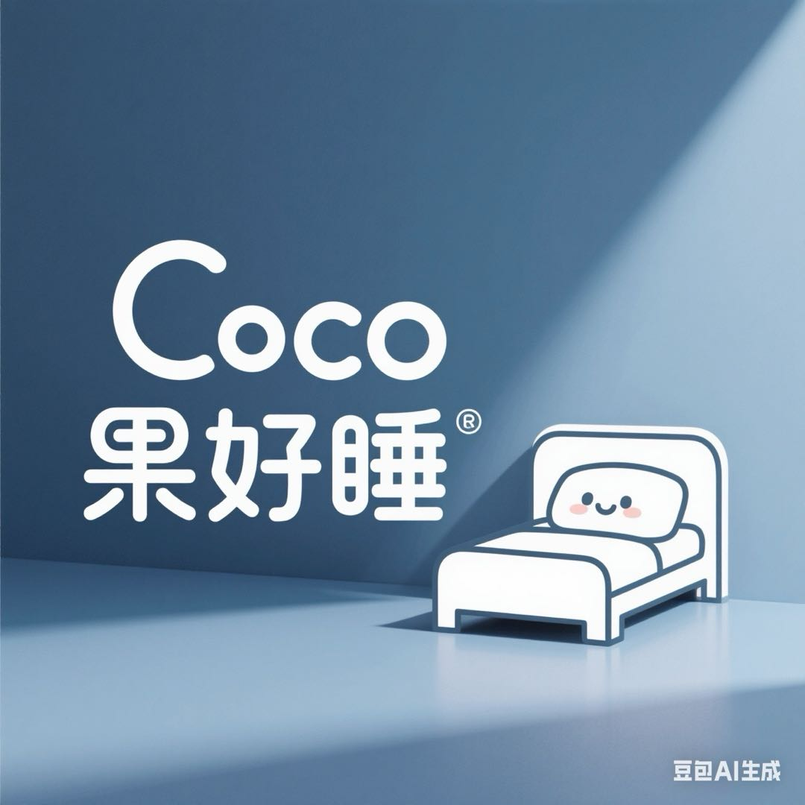

CoCo果好睡
请选择一首音乐
CoCo果原创
分龄内容体系
乐器童谣
小提琴版
摇篮曲
温柔安睡
经典儿歌
钢琴版
自然之声
森林动物
精选歌单

助眠小知识
睡前故事能将孩子的注意力从白天的兴奋或焦虑中转移出来，进入一个平静、富有想象力的世界。固定的睡前仪式（如听故事）会给孩子建立一种安全感和可预见性，暗示身体“现在是放松和睡觉的时间了”，从而帮助大脑释放促进睡眠的信号。
为面临学业压力的青少年创建一个“无电子产品”的睡前缓冲区至关重要。睡前一小时应避免使用手机和电脑，蓝光会抑制褪黑素分泌。可以鼓励他们进行轻度阅读、听舒缓音乐（如我们的减压歌单）、写日记或进行简单的伸展运动，这有助于清空大脑，缓解一天的紧张情绪。
白噪音是一种在所有频率上都具有相同强度的声音，听起来像风扇声或下雨声。它可以掩盖环境中突兀的噪音（如关门声、汽车鸣笛），创造一个更稳定、平和的听觉环境，从而减少睡眠期间的干扰，对许多人来说有助于更快入睡和保持深度睡眠。
睡前避免摄入咖啡因和大量糖分。可以适量食用一些富含色氨酸的食物，如牛奶、香蕉、杏仁等，它们有助于身体合成褪黑素和血清素，这两种物质都能促进放松和睡眠。
1. **设定固定时间**：每天在同一时间上床睡觉和起床。 2. **调暗灯光**：睡前一小时调暗家中灯光。 3. **放松活动**：洗个热水澡、阅读或听轻音乐。 4. **告别屏幕**：关闭所有电子设备。 5. **舒适环境**：确保卧室安静、凉爽、黑暗。